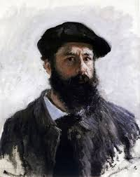

Vincent Van Gogh

Claude Monet, who lived in France from 1840 to 1926, was a founder of Impressionism. He was an innovator and promoter of the movement's practice of painting outside of the studio in all weathers, en plein air.
Few Facts
-
1. Impressionism owes its name to him:
Monet's 1874 seascape, Impression, Sunrise,
was shown at the first exhibition of the Cooperative and
Anonymous Association of Painters, Sculptors, and Engravers.
The critic Louis Leroy mocked all the unfinished-looking paintings
as 'impressions', and the name stuck.
-
2. Monet very nearly drowned:
The year before he painted this scene of swimmers at the
popular swimming spot on the Seine known as the Grenouille,
Monet had leapt into the river, intending to take his own life.
He immediately regretted this, but he would be plagued with melancholy
for the rest of his life.
-
3. He was a refugee:
In 1870, as the devastating Franco-Prussian war broke out,
Monet and his family escaped Paris to live in London. It was a wise move.
Paris was besieged, and a number of other artists who remained lost their
lives in the war, and in the fall of the revolutionary Paris Commune.
-
4. Stayin' at the Savoy:
Over the years he returned to London, staying in the Savoy Hotel.
From this vantage point on the Thames he painted some of his most striking
abstract works, such as this view of Waterloo Bridge. Today, his favourite rooms,
610 and 611, are named The Monet Suite in his honour.
-
5. He lost his eyesight:
From 1914, Monet was severely affected by
cataracts which clouded his vision and made it appear yellow.
This was a disaster for the painter, but for many years he was more
afraid of surgery than partial blindness. Eventually, in 1923 he underwent
two operations to remove them.
-
6. He was a gardener:
By 1890, Monet was selling enough art to be able to buy the house he was
renting at Giverny, as well as the surrounding buildings and the land for his gardens.
The gardens would become the focus of both his art and life in his later years -
under his eye they constantly evolved.
-
7. He was a peacemaker:
His famous waterflowers at the Musée de l'Orangerie in Paris were donated the
nation to commemorate the end of the First World War. He described his vision of
the exhibition space as, "the illusion of an endless whole, of a wave with no
horizon and no shore."
For more information check out Claude Monet on Wikipedia
developed by: Mansi Patel